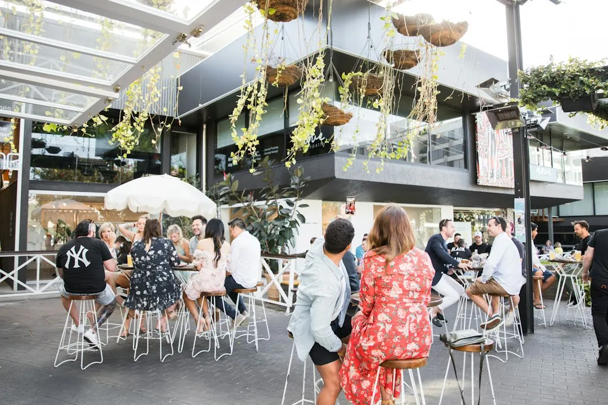

The source page presents a free Brisbane dining directory with 9 provider types: Asian, Casual and Family, Fine Dining, Italian, Modern Australian, Restaurants, Seafood, Steak and Grill, and Vegetarian and Vegan. It highlights cross-checked listings, reviews, photos, service and pricing comparison, and direct contact options. Featured examples include Frescos Restaurant in Spring Hill, Corbett and Claude in Brisbane City, Sunnybank Hotel in Sunnybank, Marlowe Restaurant in South Brisbane, and Southside Restaurant in South Brisbane.
For diners comparing restaurants brisbane options, the useful starting point is not a suburb list alone, but category fit, profile evidence, current menu checks and booking confidence.
Restaurants Brisbane Explained
Best Brisbane Restaurants presents itself as a Brisbane dining directory where users can browse cross-checked business listings, read reviews, view photos, compare services and pricing, and contact venues directly. That makes it most useful as a shortlisting tool, not as a substitute for checking the venue's own booking page before you travel.
The page gives enough structure to sort the first round of choices quickly. Category pages split the market into Asian, Casual and Family, Fine Dining, Italian, Modern Australian, Restaurants, Seafood, Steak and Grill, and Vegetarian and Vegan. Location pages then help narrow the same decision by area, including examples such as Brisbane City, South Brisbane, Fortitude Valley, West End, Newstead, Bulimba, Morningside, Teneriffe, Woolloongabba, Sunnybank and Spring Hill.
Use each profile as a prompt for verification. If a listing says the venue's own page has menus, dinner, lunch, private dining, functions or booking availability, check that source before assuming a dish, session or table time is available.
Who this applies to
This guide is for diners who already know they want a Brisbane venue, but need a cleaner way to reduce the choice set. It suits couples comparing dinner options, groups checking function suitability, families wanting casual choices, and visitors who need a suburb-based shortlist before making direct contact.
- Category-first search: useful when cuisine or dining style matters more than the exact suburb.
- Location-first search: useful when the meal needs to sit near work, accommodation, transport, an event or an existing plan.
- Profile-first comparison: useful when reviews, photos, listed services and booking pathways affect the decision.
The companion parallel Brisbane restaurant guide can be used as another editorial reference point when comparing how a directory page frames the same dining search.
Choosing by dining intent rather than category labels
The categories are broad, so the better question is what kind of meal you are planning. A casual family booking has different proof points from a fine dining night, a seafood meal, an Italian group dinner or a vegetarian and vegan shortlist. The source page does not state menus in full, so the category should be treated as the first filter only.
Featured profiles show why that matters. Frescos Restaurant is described as a verified restaurant venue in Spring Hill, with its own site providing information about breakfast and dinner. Sunnybank Hotel is described as a verified restaurant in Sunnybank, with information about dinner, lunch and menus. Southside Restaurant in South Brisbane points readers towards menus, private dining or functions and lunch. Marlowe Restaurant is described as offering modern Australian cuisine and fine dining.
Those details support different diner questions: is the venue open for the meal period you need, does it suit a private or group setting, and does the listed style match the occasion?
What to verify before booking
The most reliable use of the directory is to collect candidates, then confirm the changing details directly with the venue. The source page itself tells readers to check official venue pages for current menus, trading details and booking availability on relevant listings. That is a useful restraint because restaurant details can change more quickly than directory summaries.
- Confirm the current menu if dietary fit, cuisine style or a specific dish matters.
- Check booking availability before organising transport or inviting a group.
- Look for lunch, dinner, breakfast, private dining or function details where those are relevant to the occasion.
- Compare review signals with photos and listed services rather than relying on one field alone.
- Use direct contact when the listing leaves a practical question unanswered.
This approach keeps the directory helpful while avoiding assumptions about opening sessions, table availability or current offers.
Reading featured listings with care
The featured section mixes category, suburb, rating and review count information with short descriptive notes. Corbett and Claude is listed as an Italian restaurant in Brisbane City with a 4.5 rating and 3947 reviews. Sunnybank Hotel is listed with a 4.5 rating and 3204 reviews. Southside Restaurant is listed with a 4.5 rating and 1240 reviews. Marlowe Restaurant is listed with a 4.7 rating and 257 reviews. Frescos Restaurant is listed with a 4.5 rating and 84 reviews.
Those numbers are useful for comparing visibility and review volume on the source page, but they should not be read as a guarantee of a current experience. A smaller review count may still describe a venue that fits a specific meal better, while a larger count may simply give more public feedback to inspect.
For Brisbane City and South Brisbane, where several listed venues appear, compare dining style before geography. For Sunnybank, Spring Hill and other named areas, the suburb can become the practical filter once the category fits.
- Start with intent. Choose whether cuisine, suburb, occasion or booking certainty is the main filter.
- Shortlist profiles. Compare category, location, photos, review signals and listed services across likely venues.
- Verify current details. Use the venue's own information for menus, trading details and booking availability before committing.
- Contact directly. Call, email or request a quote through the available pathway when a practical detail is missing.
| Choice cue | Best used when | What to check next |
|---|---|---|
| Category | Cuisine or dining style is the priority | Open the relevant category page and compare profile details |
| Location | Plans are tied to a suburb or nearby activity | Check whether the listed venue suits the meal period |
| Reviews and photos | You want extra confidence before contact | Compare public signals with the venue's own current details |
| Direct contact | Availability or function needs are unclear | Ask the venue about booking, menu and service fit |
Common questions
Is the directory free to use? Yes. The source page says users can browse listings, read reviews, compare services and pricing, and get quotes for free.
Which dining categories are listed? The page lists Asian, Casual and Family, Fine Dining, Italian, Modern Australian, Restaurants, Seafood, Steak and Grill, and Vegetarian and Vegan.
Can I rely on a listing for current menus and booking times? Use the listing as a guide, then check the venue's own details. Several profiles specifically direct readers to official venue information for current menus, trading details and booking availability.
Which Brisbane areas appear in the directory examples? Examples on the page include Brisbane City, South Brisbane, Fortitude Valley, West End, Newstead, Bulimba, Morningside, Teneriffe, Woolloongabba, Sunnybank and Spring Hill.
This guide covers how to use a Brisbane dining directory to compare categories, suburbs, profile details and booking checks.